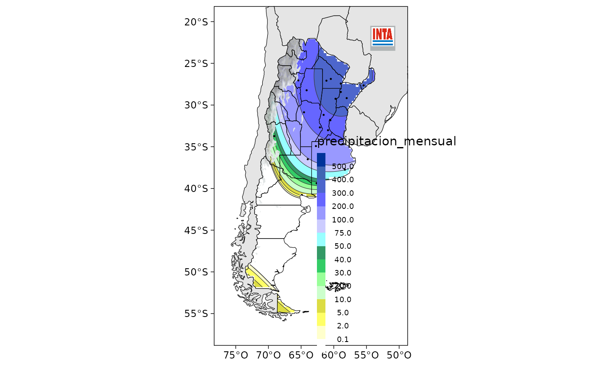
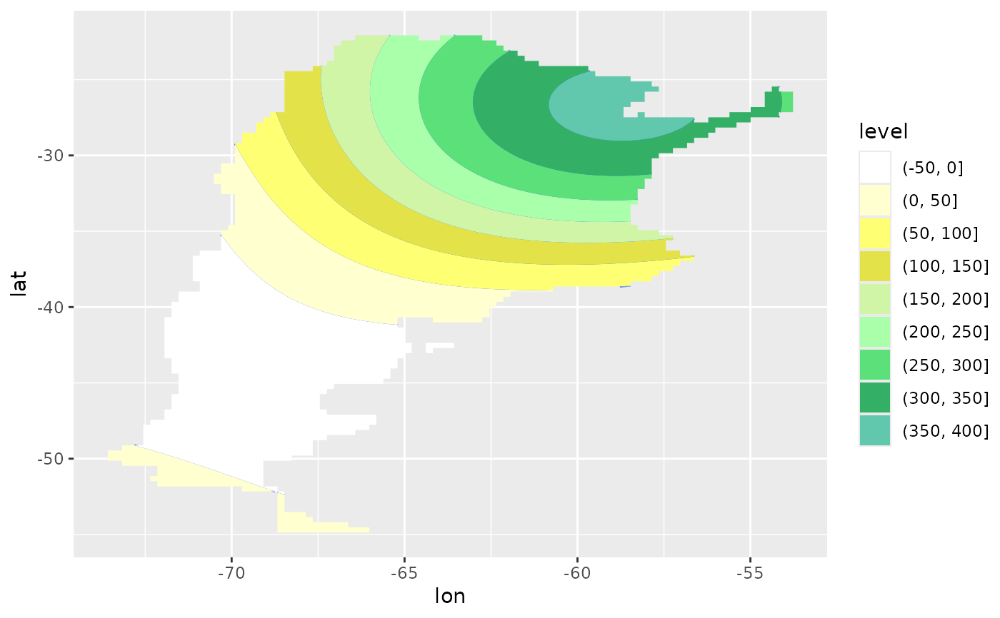

Escalas de colores típicas usadas por INTA para distintas variables.
Valor
Lista en el mismo formato que devuelve leer_surfer() con elementos:
niveles(numérico), el nivel a que corresopnde cada color.colores(caracter), la representación hexadecimal del color de cada break.paleta(función), una función que toma un enterony devuelve un vector de caracter conncolores interpolados a partir de los colores de la escala.
Ejemplos
library(ggplot2)
library(dplyr)
pp_enero <- datos_nh_mensual |>
filter(mes == unique(mes)[1])
# En el contexto de la función mapear():
mapear(pp_enero, precipitacion_mensual, lon, lat,
escala = escala_pp_mensual, cordillera = TRUE)

# Con ggplot2
# Los contornos llenos requieren que los datos estén en una grilla
# regular, necesitamos hacer una interpolación con kriging.
with(pp_enero, agroclimatico:::kringe(precipitacion_mensual, lon, lat)) |>
ggplot(aes(lon, lat)) +
geom_contour(aes(z = var1.pred)) +
geom_contour_filled(aes(z = var1.pred)) +
scale_fill_inta(escala = escala_pp_mensual)
#> [using ordinary kriging]
